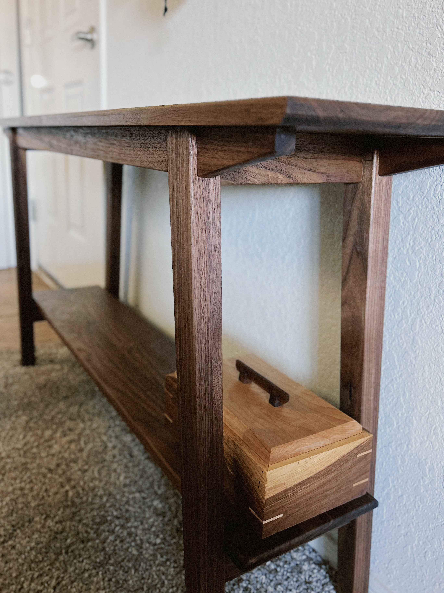
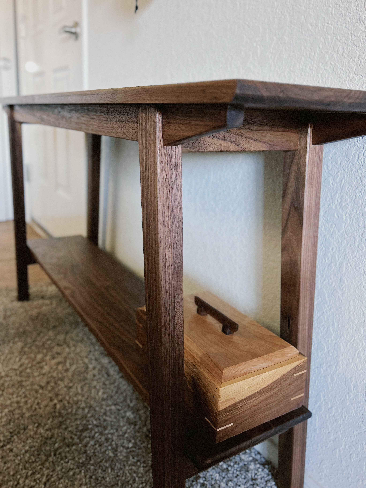

Entryway Table
Mid-century Japanese style entryway table inspired by Keith Johnson. Made from premium Walnut and Maple, this table adds an elegant touch to any home. Dimensions: 48" x 16" x 32".
This piece features fine craftsmanship, sustainable materials, and a durable finish. Its simple yet elegant design makes it a centerpiece for any hallway.